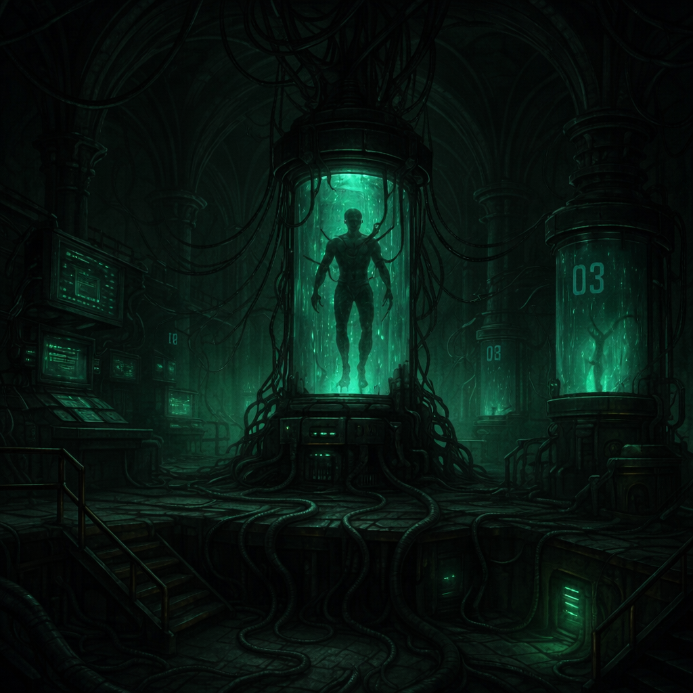

Nuestra Filosofía
En SystemMaker, cultivamos una cultura de innovación, colaboración y mejora continua. Nos apasiona trabajar en proyectos, y es esa pasión la que impulsa a nuestra empresa a proponer soluciones nuevas y creativas para los desafíos de empresas, pymes y proyectos actuales. Cada experiencia refleja nuestro compromiso con la calidad, la creatividad y el propósito, guiados siempre por nuestros valores y visión propia.

Nuestra Experiencia
Desde 2020, en SystemMaker hemos desarrollado proyectos tecnológicos que generan valor y aportan soluciones innovadoras a empresas, pymes y nuevos emprendimientos. Nuestra trayectoria nos permite comprender a fondo los desafíos actuales y ofrecer respuestas creativas, eficientes y adaptadas a cada necesidad.
Nuestra Expertise
El equipo de SystemMaker está formado por profesionales expertos en distintas áreas de la informática, incluyendo inteligencia artificial, desarrollo web, seguridad, DevOps, gestión de proyectos y arquitectura de software. Nuestra diversidad de conocimientos nos permite abordar proyectos complejos y multidisciplinarios, garantizando soluciones integrales y eficientes.
Nuestras Profesiones del Equipo
Contamos con ingenieros informáticos, desarrolladores, arquitectos de software, analistas de datos, especialistas en programación, expertos full stack, analistas programadores y profesionales en distintas ramas tecnológicas, todos comprometidos con la excelencia y la innovación.
¿Eres estudiante o buscas experiencia profesional?
En SystemMaker no solo creemos en el talento joven: también contamos con una sólida red de empresas, instituciones y personas clave capaces de potenciar tus ideas, tu mentalidad y tus proyectos hasta llevarlos a su máximo nivel de conocimiento…
o empujarte a una gloriosa autodestrucción en el intento. 😂🤣
Si eres estudiante o buscas tu primera experiencia en tecnología, este espacio es para ti. Aceptamos personas con ganas de aprender y crecer, ofreciéndoles la oportunidad de incubarse en nuestra empresa, participar en proyectos reales y desarrollar habilidades clave para su futuro profesional.
¿Listo para el reto? En SystemMaker, el límite lo pones tú (o la realidad, pero eso lo descubrimos juntos). 😅
